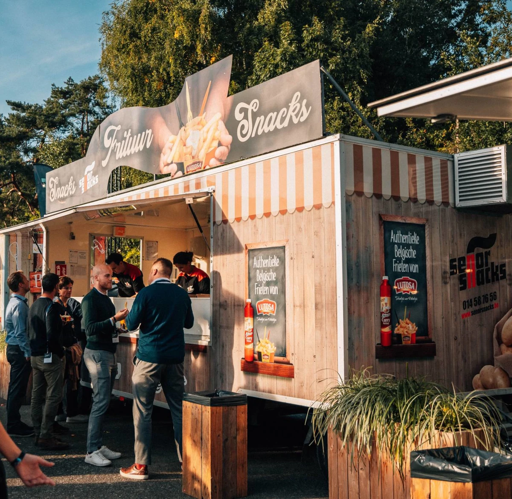
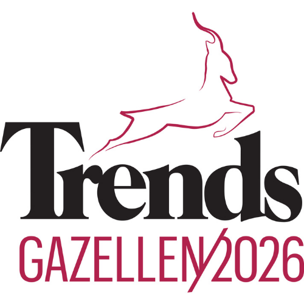

Mobiele cateringstations, foodtrucks en drankwagens voor uw personeelsfeest, teambuilding, jubileum, productlancering of festival — tot 30.000 gasten, over heel België en Nederland.
Van een intiem personeelsevent tot een grootschalig jubileum of festival met 30.000 gasten — wij hebben de capaciteit, het team en de ervaring. Al meer dan 30 jaar dé referentie in België en Nederland, met een vloot van 100+ professionele cateringwagens, foodtrucks en drankstations.
Altijd de juiste mix van foodtrucks, frituurwagens en drankstands voor uw schaal.
Van briefing tot afbraak — u coördineert met één persoon. Wij regelen de rest.
Bewezen op de grootste events en festivals van België en Nederland.
Decennialang op de grootste festivals en events. Uw event is in de beste handen.
Van 30 tot 30.000 gasten — wij schalen altijd mee.
Binnen of buiten, op uw locatie — flexibel en zonder zorgen.
Meerdere wagens en getrainde teams voor een vlotte doorstroom.
Duurzame verpakkingen, energiezuinige trucks, hygiënisch verantwoord.
Opbouw, bediening & afbraak. Eén aanspreekpunt van A tot Z.
Halal = vlees geslacht via de halal-methode, geen varkensvlees of alcohol, strikte scheiding van ingrediënten. Señor Snacks werkt uitsluitend met gecertificeerde halal-leveranciers. Zo voelt elke medewerker zich welkom aan tafel — ongeacht achtergrond of overtuiging.
Geen vaste formules. Wij schalen mee met uw event — van een intiem personeelsfeest tot een grootschalig openluchtspektakel. Altijd dezelfde Señor Snacks-kwaliteit, altijd op maat.
De drie pijlers waarop onze corporate catering gebouwd is. Elk event, elk jaar opnieuw.
De uitdaging. NMBS Mechelen organiseerde een groot personeelsevent voor 2.000 medewerkers. De volledige groep diende binnen 2 uur bediend te worden — snel, gelijkwaardig en zonder lange wachtrijen.
Onze aanpak. Meerdere cateringwagens met versgebakken friet en stoofvlees, aangevuld met 4.000 frisdranken. Dankzij efficiënte doorstroom en getraind personeel werd iedereen binnen 2 uur bediend — zonder gedoe.
Al 15 jaar vertrouwen. Reynaers Aluminium vertrouwt al 15 jaar op Señor Snacks voor hun jaarlijks nieuwjaarsfeest. Elk jaar dezelfde kwaliteit en betrouwbaarheid — en toch telkens een verrassend menu.
De formule. 5 à 6 foodtrucks per editie. Friet en hamburgers als vaste waarden, elk jaar wisselende opties. Dranken: bier, frisdranken, warme dranken én alcoholvrije mocktails — voor iedereen iets.
Een stijlvolle, volledig uitgeruste food container, klaar om verse gerechten te serveren waar jij maar wilt. Als een foodtruck — maar ruimer, robuuster en met meer mogelijkheden. Ideaal voor festivals, motorcrosswedstrijden, meerdaagse events en alles daartussenin.
 Burgers · Pasta · Frieten & Snacks · on location
Burgers · Pasta · Frieten & Snacks · on location
Een container maakt indruk en zorgt voor een sterke, professionele uitstraling op jouw event.
Meer ruimte dan een foodtruck: meer capaciteit, meer gerechten en snellere service, ook bij grote drukte.
Stevig, weerbestendig en gemaakt om dag na dag te presteren.
Van festivalterreinen tot motorcrosscircuits — uitgerust voor elke locatie, ook waar faciliteiten beperkt zijn.
Wij zijn het enige 100% Belgische festivalcateringbedrijf dat dit aanbiedt. Een unieke beleving die echte ambachtelijke snacks naar jouw festival brengt — warm, vers en rechtstreeks uit de muur. Gewoon de beste kroket, frikandel of snack die je op een festival kan vinden.
 Live
De Snackmuur · Kracht van ambacht
Live
De Snackmuur · Kracht van ambacht
Als enige 100% Belgische festivalcateringbedrijf bieden wij deze beleving aan.
Echte kwaliteitssnacks, warm geserveerd, zoals het hoort.
Ondergebracht in een 10-foot container: klein van formaat, groots in beleving.
De muur trekt aandacht en zorgt voor een unieke ervaring op jouw event.
Al meer dan 30 jaar verzorgen we catering op festivals, sportevenementen en bedrijfsfeesten. Dat doen we met smaak — én met respect voor de planeet.
Een eigen zonne-installatie van 75.000 kW piekvermogen. Frituurwagens, koel- en wasinstallaties draaien grotendeels op stroom die we zelf produceren.
Door ons frituurvet te recycleren via Quatra vermeden we bijna 30 ton CO₂ — gelijk aan ruim 100 retourvluchten Brussel–New York. Geverifieerd door Anthesis · ISO 14064.
Meer dan 90% Belgisch: korte keten, minder transport. Vaste partners: Aardappelen Nijs, Van Reusel, Pauwels, La Lorraine, IJsboerke, OVI.
90% van onze 100+ wagens voldoet aan Euro 6 (tot 90% minder fijnstof). Slimme GPS-routeplanning. Eerste EV-pilootproject gepland voor 2027.



Partners in Sustainability 2026 · Trends Gazellen 2026 — Winnaar, Provincie AntwerpenVan eerste contact tot afbraak — u heeft één aanspreekpunt en geen verrassingen achteraf.
U contacteert ons met datum, locatie en verwacht aantal gasten. Wij plannen snel een gesprek in.
Gepersonaliseerd voorstel: welke wagens, welk aanbod — passend bij uw budget.
Transport, opbouw, timing en personeel. Alles vastgelegd in een duidelijk draaiboek.
Onze wagens staan klaar. Snel, lekker, efficiënt — uw gasten tevreden.
Wij ruimen alles op. Heldere factuur conform voorstel — geen verrassingen.
Een professioneel event vraagt om een professionele partner. Wij staan voor u klaar — van eerste briefing tot afbraak.
Vertel ons over uw event — datum, locatie en aantal gasten. Wij nemen binnen 24u contact op.
✉ info@senorsnacks.be ⤓ Download brochure (PDF)